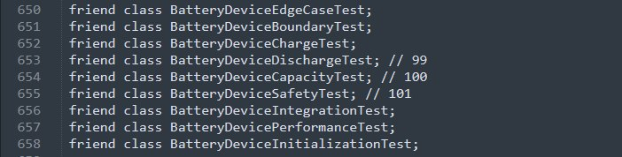

Back in 2016 I was invited to help develop the "ORBI" action glasses — waterproof eyewear with several cameras that can stream 360° video straight to a smartphone, and that aren't supposed to break if you go for a swim with them (project page on Indiegogo). My task was to write the algorithm that stitches the video stream from four cameras into one big 360° video — not a terribly hard task at the time, but one requiring some specific knowledge of OpenCV and the surrounding tooling. But this article isn't about that, because it's all guarded IP now — it's about how we used legal (and not-so-legal) C++ language tricks to write the test harness for the classes, and therefore the algorithms, we worked with. Sure, you'll say — what's the big deal, add getters and test to your heart's content. But what if there's no getter, or the class member is hidden in the private section and you can't change the header? Or the library vendor forgot to ship the headers and sent only a scan of the sources (Chinese friends are like that), and you still need to test it? Multiply the desire to write tests by your morning coffee, add some wild enthusiasm, and you get a whole lot of compile errors interesting experience. If you mustn't, but you really want to, then you can. As a lead I once knew used to say: "There's no code we can't refactor, especially over morning coffee."
In the early stage of development we didn't think too hard about the overall architecture; we slapped together a prototype out of free software and some choice words OpenCV + Hugin + stitchEm, so the tests were scattered all over the project, with includes of varying degrees of harmfulness. Well, at least they existed and they ran.
By the time we presented the prototype at the end of 2016, one of the device's core classes — the one that assembled 4 frames into one — was loaded with tests up to the eyeballs; I don't remember exactly, but something like 50 friends for tests. To repeat: this wasn't done on purpose, it just happened historically and then became common practice. Every week of development added another couple of test friends to that class, and at some point we decided we had to stop this vicious habit.
Let me show him to you. There he is, that cunning fellow of civilian appearance!
Show code (OrbiVideo421)
class OrbiVideo421 : public orbi::intrusive_ptr {
friend struct TestVideoStream;
friend struct TestVideoFrame;
friend struct TestVideoStitcher;
friend struct TestVideoPlayer;
friend struct TestVideoTest;
friend struct TestVideoStreamProcessor;
friend struct TestVideoCapture;
friend struct TestVideoWriter;
friend struct TestVideoProcessor;
friend struct TestVideoTestSuite;
friend struct TestVideoAnalyzer;
friend struct TestVideoConfiguration;
friend struct TestVideoBuffer;
friend struct TestVideoRenderer;
friend struct TestAudioStream;
friend struct TestAudioFrame;
friend struct TestAudioStitcher;
friend struct TestAudioPlayer;
friend struct TestPerformanceAnalyzer;
friend struct TestErrorLogger;
friend struct TestVideoFrameAnalyzer;
friend struct TestVideoSynchronization;
friend struct TestVideoMetadataExtractor;
friend struct TestVideoComparison;
friend struct TestVideoStreamController;
friend struct TestVideoStreamEncoder;
friend struct TestVideoStreamDecoder;
friend struct TestVideoStreamRouter;
friend struct TestVideoEffect;
friend struct TestVideoSegmentation;
friend struct TestVideoStreamRecorder;
friend struct TestVideoCompression;
friend struct TestVideoStreamSplitter;
friend struct TestVideoStreamSwitcher;
friend struct TestVideoStreamMetadataEditor;
friend struct TestVideoStreamAnalyzer;
// about 40 more test friends below
}The right way — slow and expensive
Show code (OrbiMemoryUnit)
class OrbiMemoryUnit : orbi::vtable_at_top {
friend MemoryTestRead;
friend MemoryTestWrite;
private:
nobject *_object;
uint32_t _reserved_memory;
}Everything was hidden inside internal structures, and the individual test friends used them as they saw fit. But then the beautiful us showed up and decided to do it by the book, adding getters to the class members we needed. Of course, people went in not just to add getters, but also to refactor the code and the names a little. A couple of weeks of monkey-work loomed on the horizon, and it wasn't even certain it would turn out useful, because the class interface was starting to change to suit the tests. On top of that it violated the "breaking changes" rule — changing an established API without good reason means future trouble with compatibility and side effects you can't catch for the life of you. When a 300+ line refactor mixed with renamed variables lands in review, it was very painful to look at. In the end, after a couple of calls, we stopped this practice, rolled the changes back and sat down to think how to do it differently.
Show code (getters)
class OrbiMemoryUnit : orbi::vtable_at_top {
private:
nobject *_object;
uint32_t _reserved_memory;
public:
inline nobject *object () const { return _object; }
inline uint32_t reserved_capacity () const { return _reserved_memory; }
}The upsides of this approach are obvious: everything stays within the language model and is clear to newcomers on the project. The downsides are less obvious — and maybe they aren't even downsides — the most apparent being the need to think through a proper API, which on small projects with limited resources and time stretches out feature delivery and eats the team's time, as the PM pointed out to me at one of the meetings. In short: the right way — but slow and expensive, therefore the wrong way.
Black macro magic, but sometimes it won't compile
That's a strange tuning chart you've got there — all circles!
So we lived with this legacy until, one fine morning, a colleague from sunny Catania — who had recently joined this module of the project to add something — stumbled onto one of the classes. He was a very unittest-friendly coder, so the number of tests grew by half over the morning. And by lunch the build engineer got a congratulatory email saying that the number of friends in the OrbiDeviceBattery class had exceeded 100 (we figured out the exact number later, empirically) and the Keil-C compiler couldn't handle compiling it, dumping this error into the log.
Compiler output
C:\ent\orbi\prod\KeilMDK\INCLUDE\keillex\xstring(25) : error C2146: syntax error : missing ';' before identifier 'friend'
C:\ent\orbi\prod\KeilMDK\INCLUDE\keillex\xstring(597) : see reference to class template instantiation 'OrbiDeviceBattery<_E,_Tr,_A>' being compiled
C:\ent\orbi\prod\core\battery\device.cc(655) : error C2838: illegal qualified name in member declarationHow a non-template class OrbiDeviceBattery became a template, and why it dragged in xstring, is anyone's guess. The words in the error log have little to do with the actual error — we simply broke the compiler. I wrote to the compiler vendor's support and got no coherent answer, and after wandering the forums I saw that complaints like these to the compiler's core team have an average close time of half a year or more — if you visit the Keil forum you can find a couple that were opened back in 2017 and are still in the "not fixed" status. Apparently it's been sitting for five years and will sit another five. On line 655 there was, predictably, yet another friend of the class.

After grinding the grey cells that don't regenerate for a little while, we found a perfectly workable hack for the test environment. You can redefine private/class to public/struct. Seemingly here it is, "bliss" — write as many tests as your heart desires, with no friends at all. But here too a pink bird of disappointment awaited us: what builds on one clang won't necessarily work on another clang. The Keil compiler cheerfully informed us that we were trying to redefine keywords, which you really, really shouldn't do.
Show code
#define private public // illegal
#define class struct // illegal
#include "core/view_direction.h"
#include "core/view_vec2i.h"
#include "core/view_point.h"But gcc/clang are perfectly fine with it (example). Still, you really shouldn't do this — it's like raising little snitches in your own project. We only resorted to it out of desperation. Make proper solutions within the language model; it'll pay you back as less tech debt, trust my experience.
Show code
#include <iostream>
using namespace std;
#define private public
#define class struct
class A { int l; };
int main() {
A a;
cout << a.l;
return 0;
}The grandfather of the snitch
But the puzzle refused to let go of my restless brain, especially since the startup had landed its next funding round and we could relax a bit and, straightening our backs, take on something more useful than writing these hateful tests and inventing stitching algorithms. Herb Sutter wrote about the access-control problem with templates back in 2010 (GotW #76), though he considered it more of a language feature, just in case.
He even came up with a separate rule for this case:
never subvert the language; for example, never attempt to break encapsulation by copying a class definition and adding a friend declaration, or by providing a local instantiation of a template member function (GotW #76), Herb Sutter
Here's an example from Sutter himself (link) of how to break C++ encapsulation, with one caveat — the class must have a free template function in the public zone. It works simply enough: instantiating the class's template function gives us access to the class's private data, because in fact it's a member function of the class with all the rights.
Show code (Sutter's example)
class X {
public:
X() : private_(1) { /*...*/ }
template<class T>
void f( const T& t ) { /*...*/ }
int Value() { return private_; }
private:
int private_;
};
namespace {
struct Y {};
}
template<>
void X::f( const Y& ) {
private_ = 2; // evil laughter here
}
int main() {
X x;
cout << x.Value() << endl; // prints 1
x.f( Y() );
cout << x.Value() << endl; // prints 2
}In principle you could stop right here, because for 90% of cases this covers the testing needs, and our friends just become free classes that serve as a parameter for a proxy function like this. Minimal change to functionality, maximum benefit — i.e. all the test friends gone from the header. If it weren't for one BUT… we couldn't add such a template function everywhere to pull off this trick.
The gardener did it
After experimenting a bit more with getting at private class members, it became clear that none of the existing compilers catch you taking the address of a class member if it's cast to a different, non-private type. If we try to take the address of a private variable, we get a compiler error, which is logical — the compiler is smarter than us and protects us from shooting ourselves in various body parts.
Show code
struct A {
private:
char const* x = "private data";
};
int main() {
auto ptr = &A::x;
}
...
main.cpp: In function ‘int main()’:
main.cpp:46:19: error: ‘const char* A::x’ is private within this context
46 | auto ptr = &A::x;
| ^But if we politely ask the compiler to hand us the ability to shoot wherever we like the address of that variable as a template parameter, everything will be fine. After all, we don't do anything further with it — just messing around.
Show code
struct A {
private:
char const* x = "private data";
};
template <class Stub, typename Stub::type x>
struct private_member_x {
private_member_x() { auto ptr = x; }
};
// this is how we ask the compiler to ignore the variable's real type
struct A_x { typedef char const *(A::*type); };
// and now the compiler thinks it's working with a different (substitute) type
template struct private_member_x<A_x, &A::x>;
int main()
{}
// all clean, no compile errorsSo, we have the address of the private variable; all that's left is to write a wrapper to store and work with these addresses. For example, something like this (compilable — example).
Show code
// template for the stub class that will hold the variable's address
template <class Stub>
struct member { static typename Stub::type value; };
// static variable for the generic template
template <class Stub>
typename Stub::type member<Stub>::value;
// type substitution and getting the address of the private variable
// stub goes further into the member class to have a static variable for this type
template <class Stub, typename Stub::type x>
struct private_member {
private_member() { member<Stub>::value = x; } // storing the variable's address
static private_member instance;
};
// thanks to @mr_Ulman
template <class Stub, typename Stub::type x>
private_member<Stub, x> private_member<Stub, x>::instance;
// test case
struct PapaPavlica {
private:
char const* papini_dengi = "papini dengi";
};
// substitute type so the compiler isn't scared by the access violation
struct A_x { typedef char const *(PapaPavlica::*type); };
// magic, here be dragons
template struct private_member<A_x, &PapaPavlica::papini_dengi>;
int main() {
PapaPavlica papa;
std::cout << papa.*member<A_x>::value << std::endl; // papini_dengi
// unwrap the obtained address back into a variable
// we get *(papa).(&PapaPavlica::papini_dengi) = "deneg net"
papa.*member<A_x>::value = "deneg net";
std::cout << papa.*member<A_x>::value << std::endl; // deneg net
}We didn't let this code into production — it stayed the domain of the test environment, but it fit there beautifully. And of course, I won't leave you without a working library (altamic/privablic) — next time you meet our unit-test lover from sunny Catania, buy him a beer.
If you mustn't, but you really want to, then you can.
← All articles